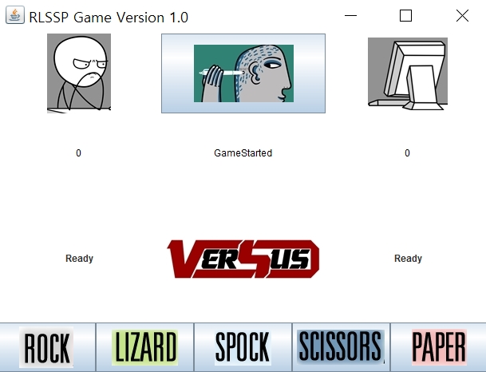
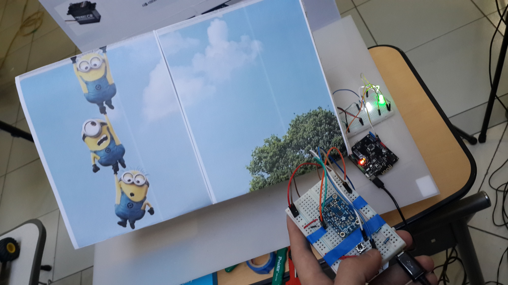

I'm Jerome Lee. My major is Electronic Engineering, but studying SW programming and HTML/CSS/Javascript recently. Also, you can infer from the above photo, i do many kinds of work or play. If you wonder what it is, go to the FreeTime page.
I'm Jerome Lee. My major is Electronic Engineering, but studying SW programming and HTML/CSS/Javascript recently. Also, you can infer from the above photo, i do many kinds of work or play. If you wonder what it is, go to the FreeTime page.
I participated in 69th anniversal idea contest last year. My team tried to make a moving screen controlled by remote controller. We planned to connect through bluetooth on bluno and arduino, but we had really hard time utill we finish it. Because it's complicated to deliver infomation of gyro sensor only by 10 digits. It was not perfect, awkward and made us sooooo tired. However it's a good experience and worthwhile work cause i can understand how the bluetooth and gyro sensor works.
 |
 |
 | |
|---|---|---|---|
 |
 |  |
 |
I took part in "Hi Seoul Festival" as a volunteer. This festival is holding an art exhibition in attractions near Seoul City Hall. Many foreign artists came to have their work displayed. Also, volunteers' activity is the most important. We help the arts installed, manage whole festival at every place, and make the festival more fun by perform flashmob and enjoy this party with audiences. It was really great time to communicate lots of people, and have many friends while we ready for this event together.
I'm a member of street dance club since 5 years ago. It's a club in Kookmin Univ. a.k.a "Busta" I'm performing choreography for 3 years. Before this genre, i practiced Breaking and House dance. Above photo is Busta's annual concert in 2011. Street dance is fun and attractive. I got more confidence and became outgoing person through street dance. It's not that hard to start, so i hope more and more people try to play street dance. I'm sure your life gonna change with exciting musics.
"Idea Factory Supporters" was a very hard activity. Its mainly for marketing Idea Factory. We made some SNS articles, took photo and video what we do, planned and held a party there. No help from Idea Factory's executives or officers. Supporters did all the works from planning to perform and finish. Nothing easy, but i showed what i can do, and figured out how marketing offices work. It's one of my best memory.